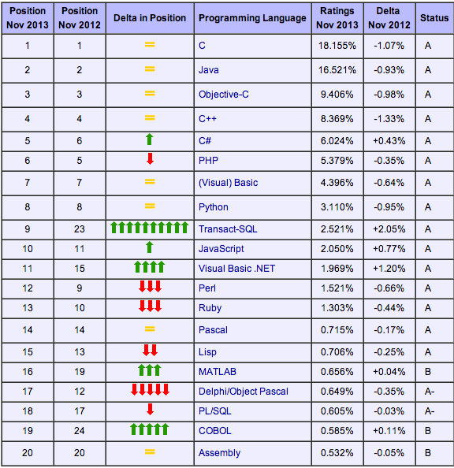

Klientbaserad webbutveckling, 1DV435
Linnéuniversitetet, Ht 2014
Programmering, JavaScript
Förkunskaper och mål
- Utgår från att ingen har programmerat tidigare!
- Grundläggande genomgång av programmering i JavaScript
- Interaktivitet och dynamiska effekter på webbsidor
- En laboration
cc From: http://commons.wikimedia.org/wiki/File%3AS%C3%B3st%C3%B3_forest_path.jpg

Varför programmering?
- I rollen som interaktionsdesigner kan du komma jobba med programmerare
- Kunna förverkliga sina idéer
- Kreativt skapande
- Problemlösande
Vad kan datorn göra åt oss
- Datorn är dålig på att hitta på saker själv
- Datorn är dålig på att förstå och tolka saker utan instruktioner
- Datorn är bra på att komma ihåg saker
- Datorn är bra på att räkna...snabbt
- Datorn är bra på att göra samma sak många gånger
- Om du vill att datorn ska utföra något
måste du programmera i detalj varje steg som så datorn förstår.
cc From: http://www.flickr.com/photos/whyamikeenan/

Vad är programmering?
- Att programmera är att tillverka ett recept som datorn ska följa
- Ett program innehåller koder i ett språk som datorn kan förstå
- Koderna innehåller instruktioner som datorn kan utföra och data(information) som
datorn kan använda när den utför sina instruktioner.
cc From: http://www.flickr.com/photos/hackny/with/7033121879/

Programmering - Hur?
En dator förstår egentligen bara ettor och nollor
De första datorerna programmerades genom att
människor själva kopplade om sladdar och tryckte på knappar
Hålkort
Program representeras oftast med en rad instruktioner uttryckt i ett
textuellt språk med en entydig grammatik. Ett så kallat programmeringsspråk.
cc From: http://www.flickr.com/photos/38659004@N03/

Programmeringsspråk
- Det finns massor av olika programmeringsspråk

- På webben är det JavaScript som gäller!
HTML vs. CSS vs. JavaScript
- HTML - Struktur
- CSS - Presentation
- JavaScript - Interaktivitet
JavaScript
- 1995, Netscape Navigator 2.0
- Internet Explorer 3.0 (JScript)
- Ecmascript - standard
- Snabbt växande
- Programmeringsspråket för webben
- JavaScript är INTE Java

När man lär sig programmera


I denna kurs
- Variabel (Variable)
- Tilldelning (Assignment)
- Datatyp (Data Type)
- Hur vi programmerar mot HTML
- Hur vi programmerar interaktivitet
- Hur vi programmerar mot CSS
- Alternativ/Selektion - (Conditional statements)
- Repetition/itteration - (loops/loopar)
- Hur kan vi använda "färdig" javascript i vår sida
Hello World!
Dags att skriva vår första JavaScript-kod!
- Hur får vi in JavaScript i HTML-koden?
- Hur testar vi om det fungerar?
- Hur får vi reda om vi skrivit fel

cc From: http://www.flickr.com/photos/tml/
Variabel
En variabel används för att be datorn att komma ihåg
Som en namngiven ”låda” där vi kan spara information.
En variabel har ett variabelnamn och kan tilldelas olika värden
- 3 ägg
- 4 dl mjölk
- ...
- ...
- Blanda äggen och mjölken
Variabler
Man deklarerar en variabel genom ordet var följt av ett variabelnamn
Data sparas i datorns minne genom att tilldela variablerna olika värden
Tilldelning görs med hjälp av ett likhetstecken '='
<script type="text/javascript">
var points = 10;
points = 20; // en variabel kan TILLDELAS nytt värde om man vill
var maxPoints; // en variabel kan DEKLARERAS först utan att få ett värde
maxPoints = 40; // sedan TILLDELAR man värdet
alert(points); // sedan kan man läsa ut värdet ur variablen
...
alert( (points / maxPoints) * 100); // Sedan används variablerna i koden
...
</script>
Att namnge en variabel
<script type="text/javascript">
var egg = 3;
var points = 12;
var name = "John";
var degreeCelsius = -4.3;
</script>
- Första tecknet i variabelnamnet måste vara en bokstav eller ett understeck _
- Inga mellanslag!
- Undvik svenska tecken
- Ge meningsfylla namn!
- Det är skillnad på STORA och små bokstäver
Test
En variabels datatyp
Alla värden är av en typ, en datatyp som talar om
vad variablen innehåller.
- Number (12, -1265, 3.14, 2.0)
- String ("Min text", "Mitt namn är John")
- Boolean (true, false)
- undefined (variablen har inte fått ett värde)
<script type="text/javascript">
var average = 132.432;
var message = "Welcome to this site!";
var isLoggedIn = false;
var person;
</script>
Datatyp - textsträngar
- En textsträng kallas string i JavaScript
- En textsträng består av noll (tom sträng) eller flera tecken
- En textsträng deklareras ofta inom citationstecken, dubbla eller enkla
- Textsträngar kan byggas ihop genom att läggas ihop med plustecken
var firstname = "Sara";
var lastname = 'Karlsson';
var antal = 10;
var empty_string = "";
// variablen fullName får värdet "Sara Karlsson"
var fullName = firstname +" " +lastname;
// Variablen message får värdet "Det finns 10 stycken studenter";
var message = "Det finns " +antal +" stycken studenter.";
Demo - Räkning med variabler
Skriv ett program som beräknar skillnaden mellan att köpa en vara för en engångssumma
eller att köpa den på avbetalning på ett visst antal månader. Vi kan bortse från räntor ect.
Mer dynamiskt tack!
Vi vill ju att användaren ska kunna skriva in värden och beräkna!
- Hur kan vi få in vad användaren skriver i ett formulär in i vårt program?
- Hur kan vi få beräkningen att ske när användaren trycker på knappen?
DOM
När webbläsaren läser in ett HTML-dokument strukturerar den
upp det till ett DOM-dokument

De attribut (id och class) vi sätter inkluderas såklart också
getElementById
Enklaste sättet att hämta ett elements värde via javascript är att i HTML-koden sätta ett id på elementet
var textInput = document.getElementById("id").value; // letar element som har ett visst id
// I detta fall är elementet ett input av typen text - Vi kan då plocka ut värdet
alert(textInput.value);
querySelector
Ett annat sätt som gör att du kan komma åt element med t.ex. class är:
document.querySelector(".active").value
DEMO
Skriv om applikationen så vi kan låta användaren skriva in värdena via ett formulär
Interaktivitet
I Javascript kan man skriva kod som körs när olika händelser (event) körs.
- Användaren trycker på en knapp
- Användaren trycker på en tangent
- En textruta får fokus
- Sidan med dess bilder har laddats färdigt
Hantera ett klick
Jag vill att min kod ska köras när användaren klickar på en knapp eller länk!
Vi får binda på händelsen onclick
// Vi hämtar en knapp med id:t button
var button = document.getElementById("button");
button.onclick = function() {
// allt vi skriver innanför "{" och "}"
// körs när knappen trycks på
}
// Alla instruktioner som är mellan de två klammerparanteserna { ... } kommer att ske
// Windows (alt-gr + 8, alt-gr + 9)
// Mac (alt + shift + 8, alt + shift + 9)
DEMO
Uppdatera applikationen så beräkningen körs när användaren trycker på knappen
Skippa också alert-rutan utan skriv ut det i HTML-dokumentet
Ändra CSS med JavaScript
Vi kan naturligtvis ändra stilegenskaperna via javascript
document.getElementById("message").style.display = "none";
DEMO
Tips för vidare inlärning
Alternativ (Conditional)

Som programmerare ställs man inför problem där man måste kunna
skriva olika kod för olika saker.
- Har användaren skrivit ett nummer eller en textsträng
- Tryckte användaren på knapp A eller knapp B?
- Vill användaren visa eller dölja innehållet?
- Är provresultatet över gränsen för godkänt?
- ...
if-sats
OM något är SANT ska vi...
T.ex.
OM textsträngen är längre än 50 tecken ska den kortas ner
OM användaren har loggat in i systemet ska informationen visas
Vi testar om något är SANT eller FALSKT
var inloggad = true;
if(inloggad) {
console.log("Användaren är inloggad");
// Mer kod här sedan...
}
DEMO
Operatorer (operators)
Vi kommer behöva skriva uttryck som kan bli antingen sant eller falskt
- Är talet lika med 10?
- Är strängvariablen name lika med "Lisa"?
- Är talet mindre än 15?
if(tal === 10) {
// Gör något
}
if(name === "Lisa") {
// Gör något
}
if(tal < 15) {
// Gör något
}
Operatorer
- tal1 < tal2 - Mindre än
- tal1 > tal2 - Större än
- tal1 === tal2 - Lika med ( boken använder == )
- tal1 >= tal2 - Större eller lika med
- tal1 <= tal2 - Mindre eller lika med
- tal1 !== tal2 - Inte lika med ( booken använder !=)
http://stackoverflow.com/questions/3804005/whats-the-reason-to-use-instead-of-with-typeof-in-javascript
Exempel
var temperatur = 10;
if(temperatur < 0){
console.log("Minusgrader");
}
if(temperatur > 0){
console.log("Plusgrader");
}
if(temperatur === 10){
console.log("Det är tio grader varmt");
}
if(temperatur <= 10) {
console.log("Det är 10 grader eller kallare");
}
OM - ANNARS
var temp = 10;
if(tal > 10) {
// Talet är större än
}
else {
// Talet är mindre eller lika med 10
}
 Denna presentation är licensierat under en
Creative Commons Erkännande 3.0 Unported Licens.
Denna presentation är licensierat under en
Creative Commons Erkännande 3.0 Unported Licens.{kind=link}